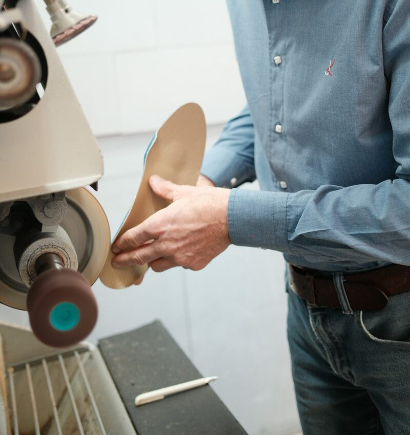
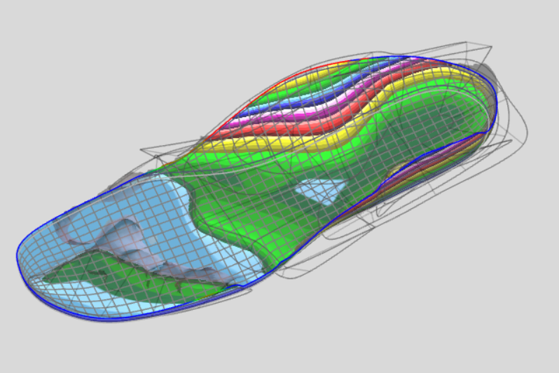

Klassischer Maßschuh
Elegant, langlebig, perfekt sitzend, von der Leistenanpassung bis zur Handnaht.

Von Einlagen und Maßschuhen über Schuhzurichtungen und Zehenorthesen bis zur Sportlerberatung: Versorgung, die zu Ihrem Körper passt, nicht umgekehrt. Entwickelt und gefertigt in unserer eigenen Werkstatt.

Orthopädische Einlagen können Einfluß auf den gesamten Körper nehmen. Durch modernste Computertechniken verbunden mit handwerklichem Können korrigieren wir gegen die Belastungen des Tages.
Kommen Sie zu uns ins Geschäft und lassen Sie sich fachmännisch beraten. Unser gesamtes Wissen stellen wir Ihnen zur Verfügung. Ihre neuen Maßschuhe fertigen wir nach Ihren Vorstellungen.

Elegant, langlebig, perfekt sitzend, von der Leistenanpassung bis zur Handnaht.
Für besondere Anforderungen: bei Fehlstellungen, Beinlängendifferenz oder Versorgungsbedarf.
Berufsschuhe, Freizeitmodelle, Therapie- und Reha-Schuhe, individuell konzipiert.
Ob Schmetterlingsrolle, Ballenrolle, Sohlenranderhöhung oder Schuherhöhung: vieles ist bei uns möglich. Kommen Sie einfach zu uns ins Geschäft, wir beraten Sie bestmöglich.
Gezielte Abrollhilfen bei Belastungs- und Druckbeschwerden.
Ausgleich bei Fehlstellungen im Stand und Gang.
Präziser Ausgleich bei Beinlängendifferenz, unauffällig gearbeitet.
Individuell gefertigte Zehenorthesen entlasten, korrigieren und schützen. Bei Hammer- oder Krallenzehen, Druckstellen oder Fehlstellungen fertigen wir nach Abdruck eine passgenaue Orthese aus weichelastischem Silikon.
Nach Abdruck direkt am Fuß angefertigt. Jede Orthese ist ein Unikat, exakt auf Ihre Zehenstellung abgestimmt.
Bei Hammerzehen, Krallenzehen, Hallux-Fehlstellungen oder Überlappungen. Druckstellen werden gezielt entlastet.
Medizinisches Silikon ist hautfreundlich, formstabil und lässt sich bei Bedarf nachjustieren.
Mit modernen Analyseverfahren erkennen wir erste Anzeichen drohender Überlastungen und Fehlhaltungen frühzeitig. Anhand der Auswertung empfehlen wir die optimale Versorgung.

Millimetergenaue Erfassung der Fußgeometrie, Grundlage jeder individuellen Versorgung.
Wie verteilen sich Kräfte beim Stehen und Gehen? Unsere Messung macht es sichtbar.
Ob Laufanfänger oder Leistungssportler: wir analysieren Ihr Bewegungsmuster und entwickeln Versorgung, die Sie schneller, sicherer und länger in Bewegung bringt. Sport stellt besondere Anforderungen an Fuß, Schuh und Einlage.
Präzise Erfassung von Fußgeometrie und Druckverteilung. Wir erkennen Muster, bevor Schmerzen entstehen.
Entwickelt für Belastung, Dynamik und Rückstellung. Für Laufen, Radfahren, Ballsport und mehr.
Zurichtungen, Entlastung und Rehabilitation, damit Sie kontrolliert zurück in Bewegung kommen.
Gezielte Analyse auch ohne akute Beschwerden, für wer vorbeugen statt reparieren möchte.
Rufen Sie an oder schreiben Sie uns. Im persönlichen Gespräch finden wir die richtige Antwort.
Besuch planen →